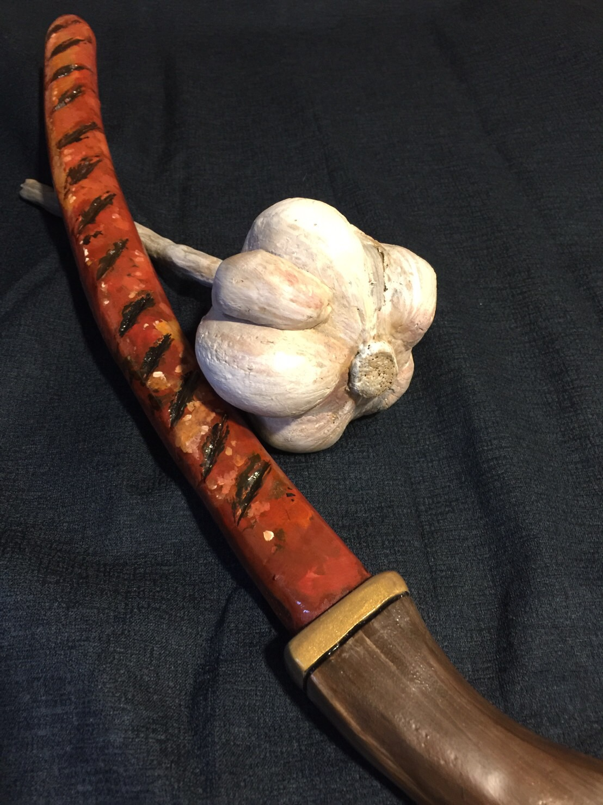
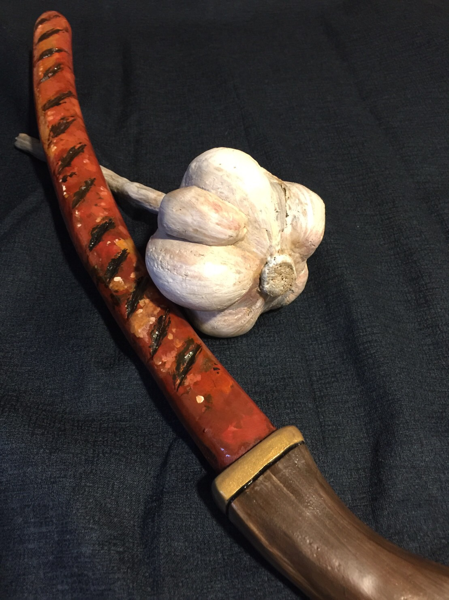
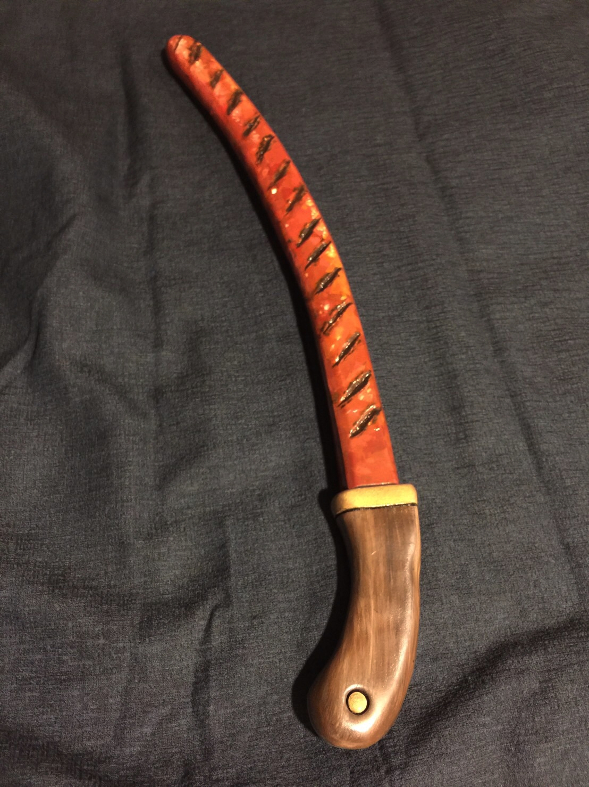
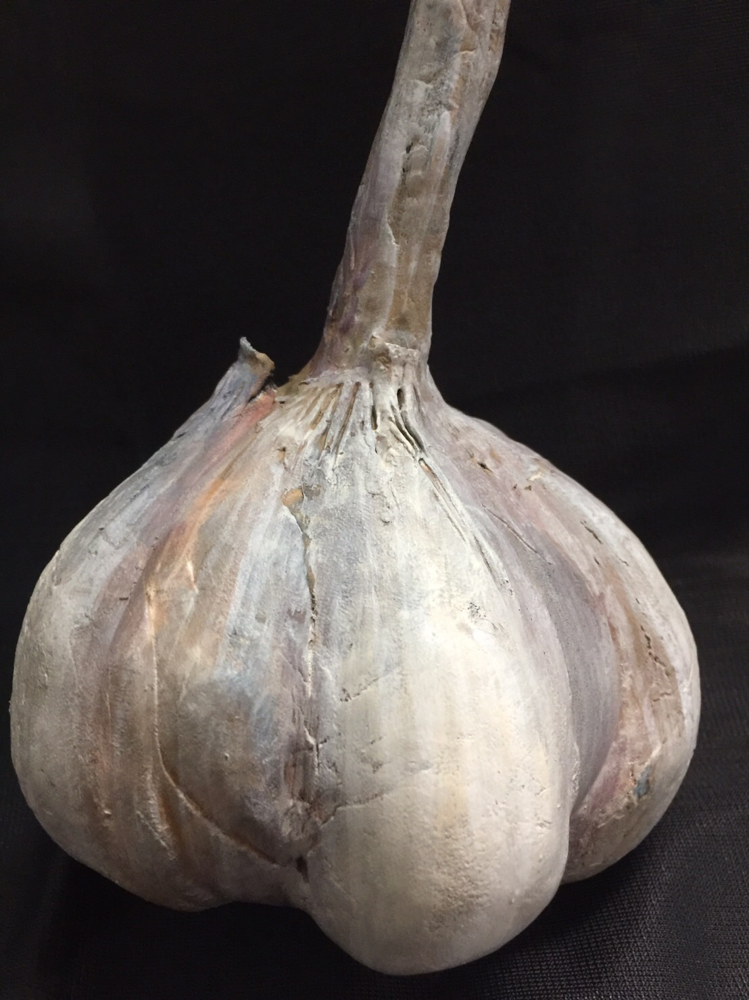
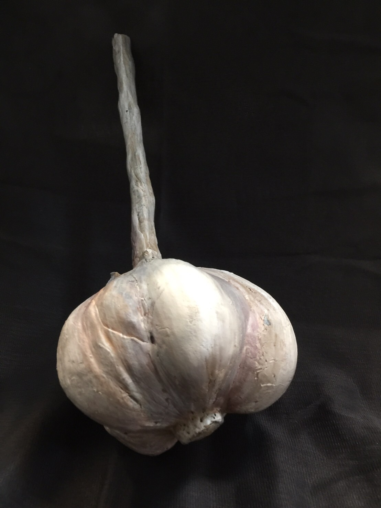
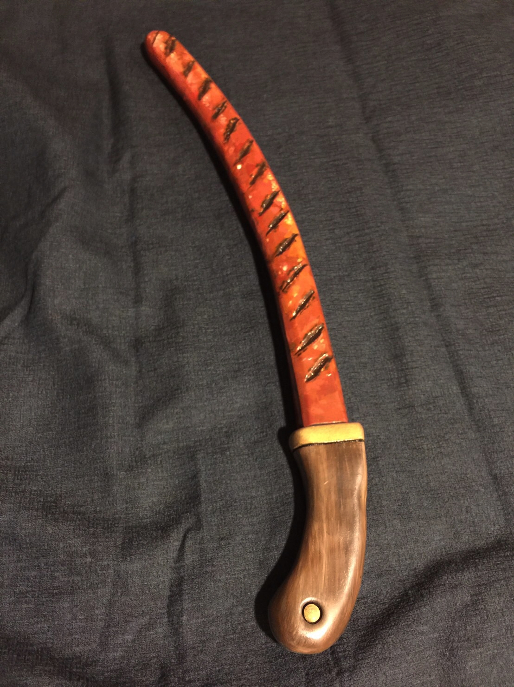
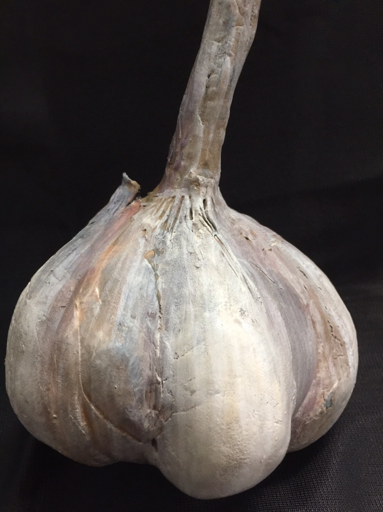
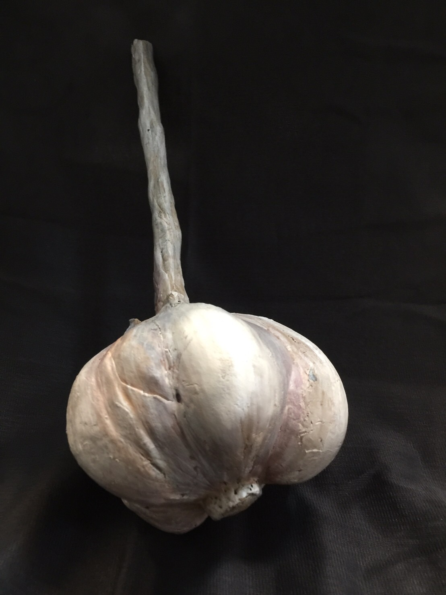

大家好我是子貓。本期分享一道家常Cos道具。
蒜頭香腸魔杖劍。
首先準備好泡棉+切割道具。
大膽下刀，打磨。
等造型大致完成。
開始填上顏色。
一道大人小孩都喜歡的蒜頭香腸魔杖劍就完成啦。
素材：EVA，壓克力顏料。
作用：裝蒜。
以下開始技術總結
第一、田中香腸劍最好選擇烤好的感覺，加上油光來強化食慾。
第二、蒜頭別撥開，選用超大顆的來搭配香腸。
第三、蒜頭魔法杖表面別上光，盡量保持原汁原味的感覺。
蒜頭香腸魔杖劍技術總結完畢。
關注子貓作家這裡總有一道你喜歡的道具。
#cosplay #道具 #子貓 #香腸 #大蒜
子貓玲/CoNeCoLin | Original Date: 2024-05-16 15:55:23
FB:子貓玲/CoNeCoLin
© 2025 CoNeCoLin. All Rights Reserved.
All content on this website is original work by CoNeCoLin. No reproduction, distribution, distribution, commercial use, or use for AI training is permitted without written authorization. For collaboration, licensing, or commercial inquiries,
please contact us through the information provided on this website.

 



 




